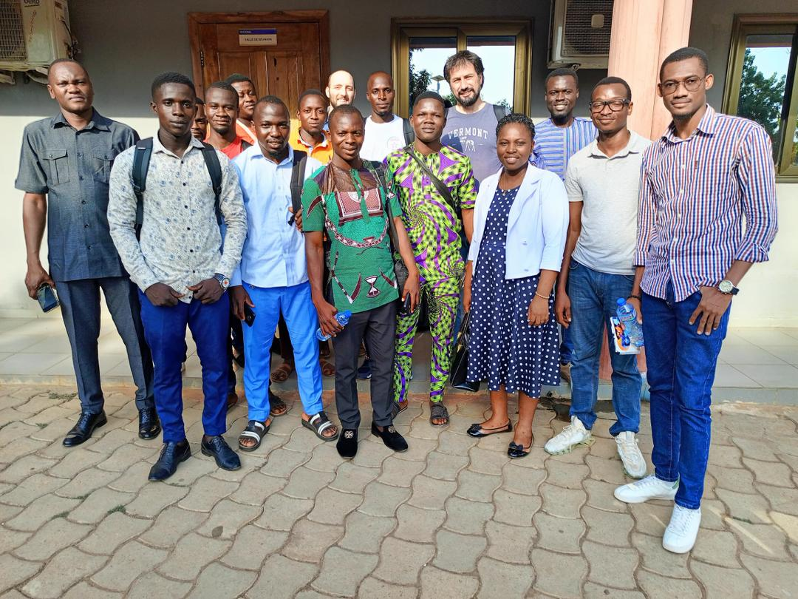
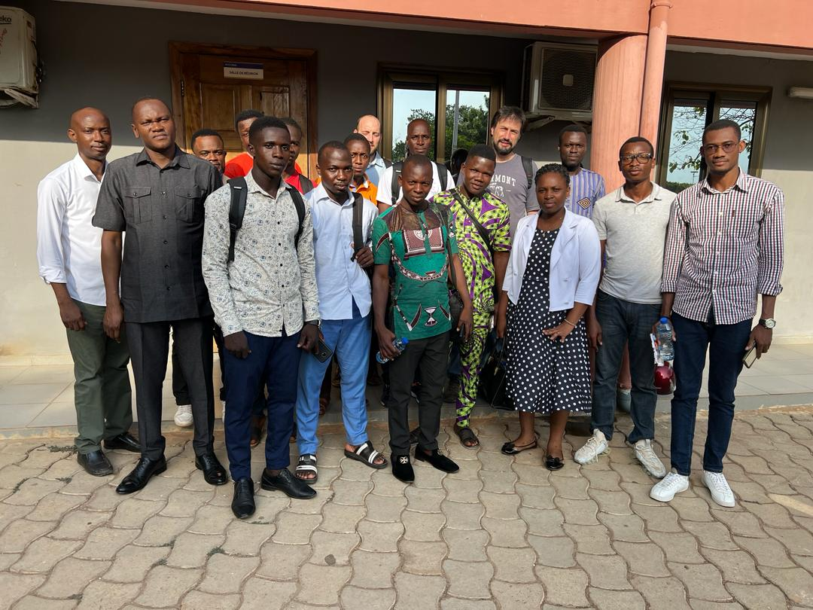
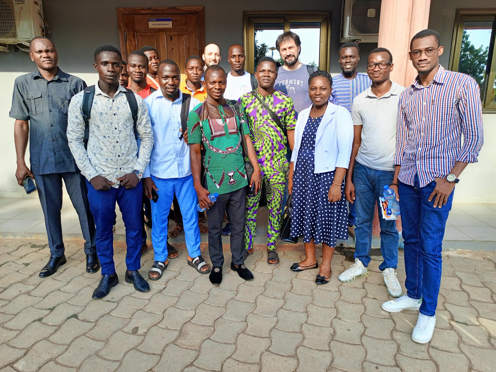
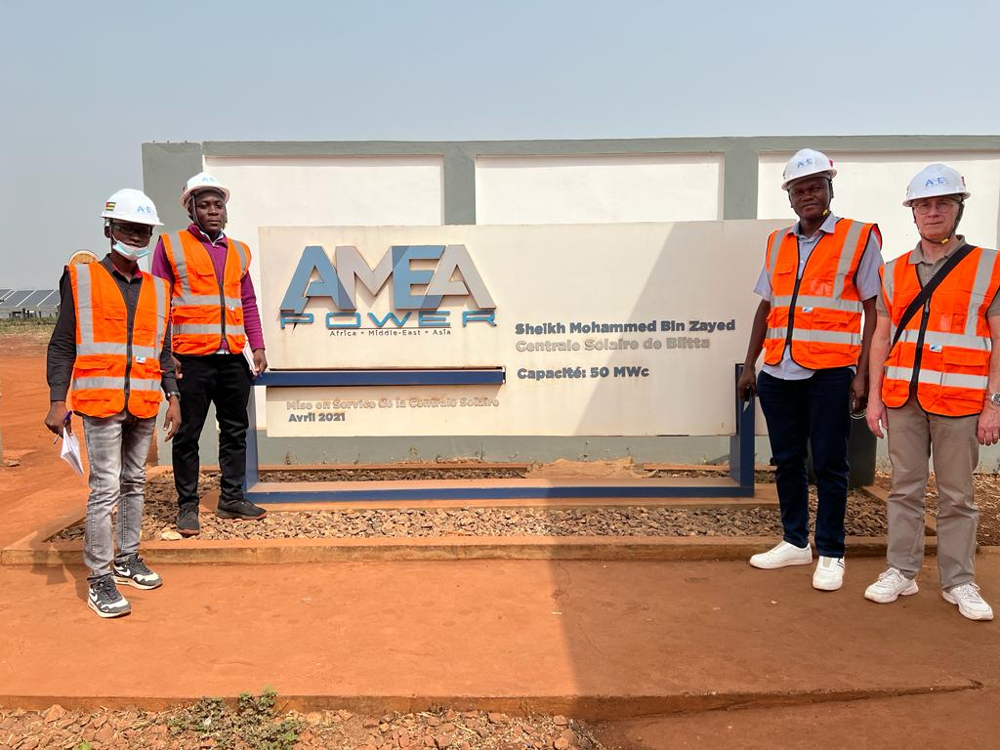
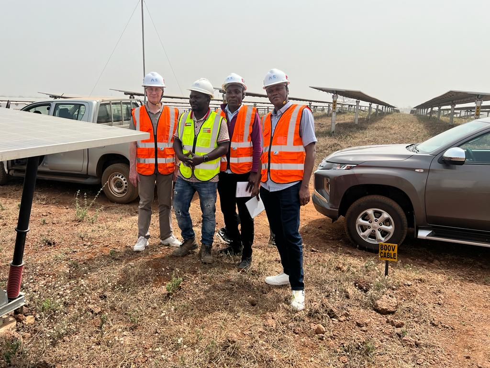
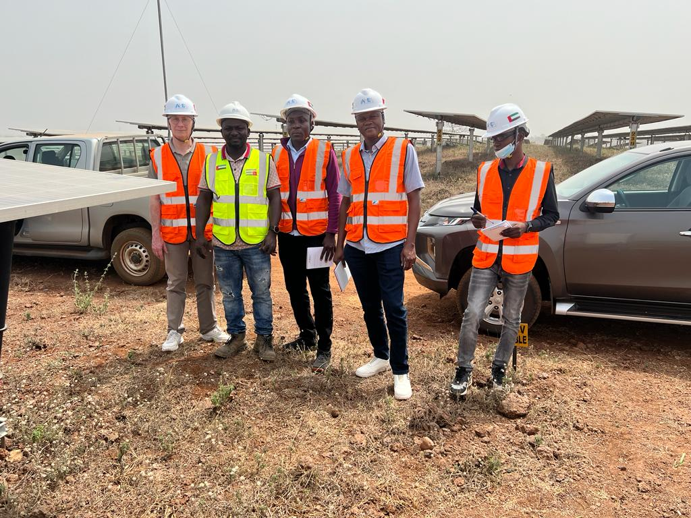
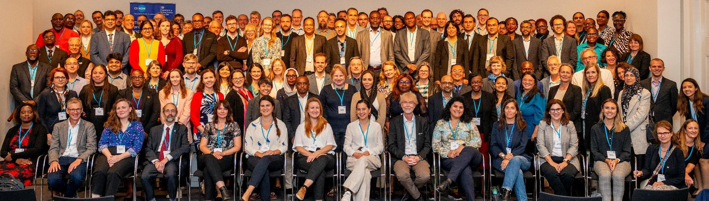

GalleryGalerie
Highlights from research visits, training events, and international workshops.
Moments forts des visites de recherche, formations et ateliers internationaux.
Master's Training, Digital Kitchen Performance Tests (KPT)Formation Master, Tests de Performance des Cuisines (KPT) numériques
With experts from Hamerkop, London. Hands on training for Master's students at Université de Lomé.Avec des experts de Hamerkop, Londres. Formation pratique des étudiants en Master de l'Université de Lomé.



Visit to the Blitta Solar Farm (50 MW, expanding to 100 MW)Visite de la Centrale Solaire de Blitta (50 MW, en extension à 100 MW)
With Prof. Châtelet, Université de Technologie de Troyes. The largest grid connected solar plant in Togo.Avec le Prof. Châtelet, Université de Technologie de Troyes. La plus grande centrale solaire connectée au réseau au Togo.



IPCC Seventh Assessment Report (AR7) WorkshopAtelier sur le Septième Rapport du GIEC (AR7)
Royal Society, London, UK. Exploring ideas and contributing to the upcoming IPCC AR7 cycle.Royal Society, Londres, Royaume Uni. Échanges et contributions pour le prochain cycle d'évaluation AR7 du GIEC.
